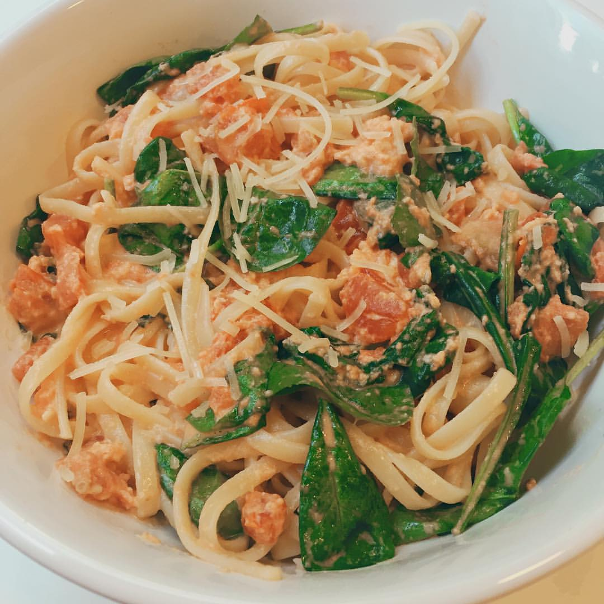

Start by making a roux: melt the butter and flour together until you see beads of fat forming on the bottom of the pan. Next, add milk, garlic, and tomato paste until the sauce is a pink color. Let the milk reduce until creamy. Add spinach until wilted. Mix in parmesan cheese until melted, and season to taste. Serve over pasta or parmesan chicken.
